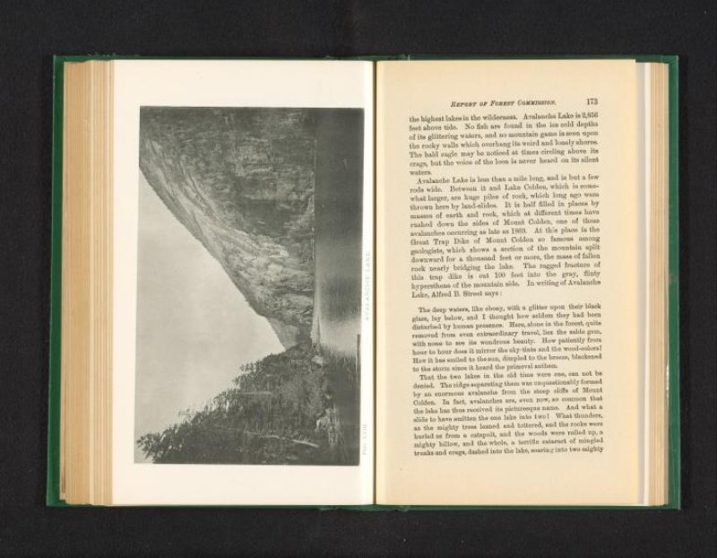
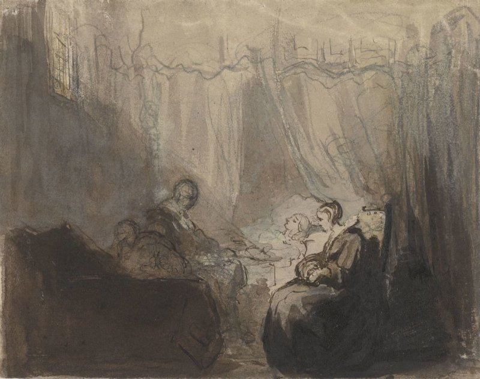
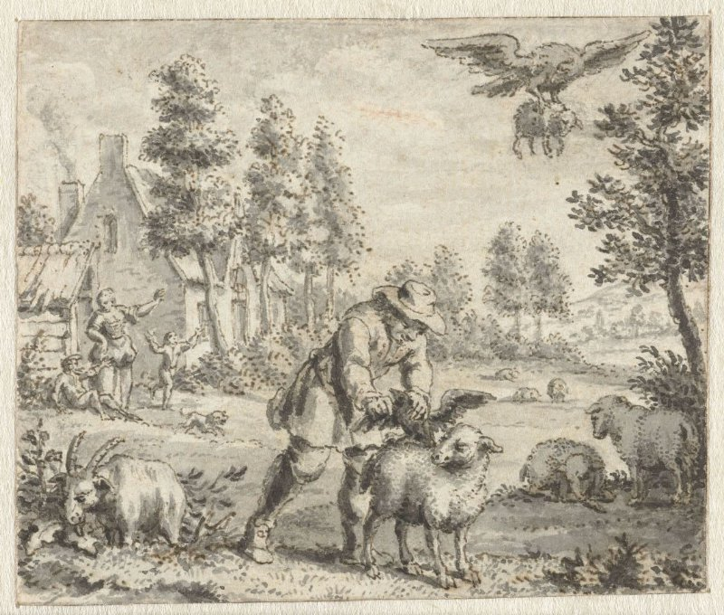
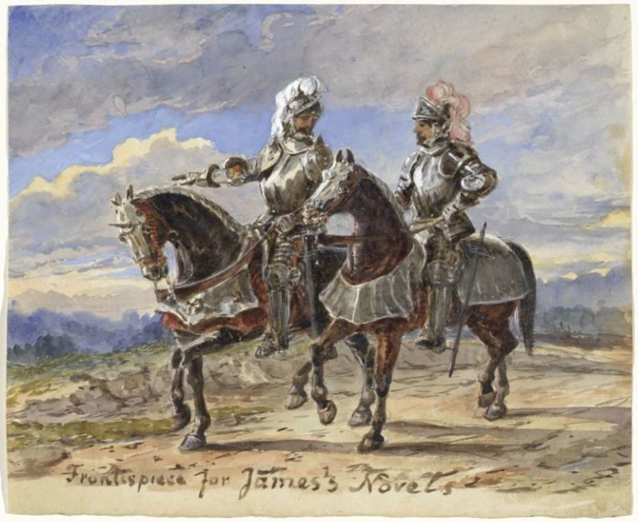
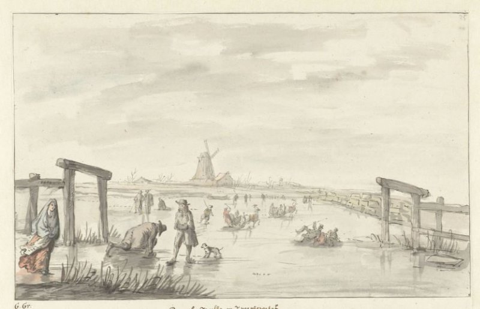
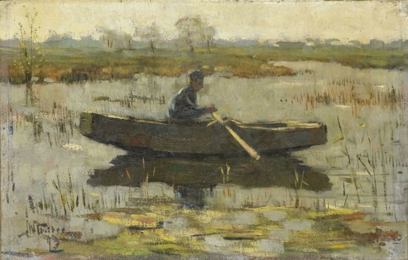
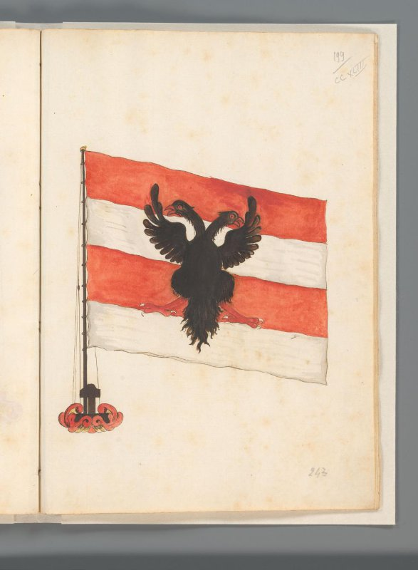
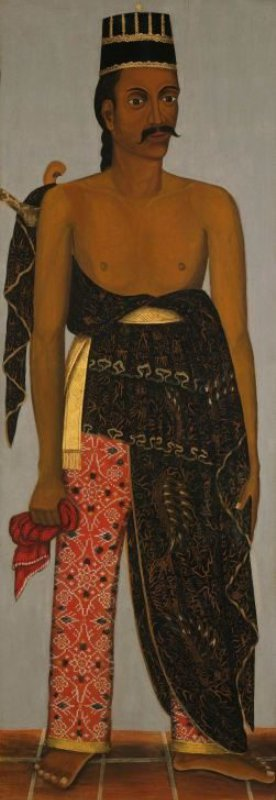
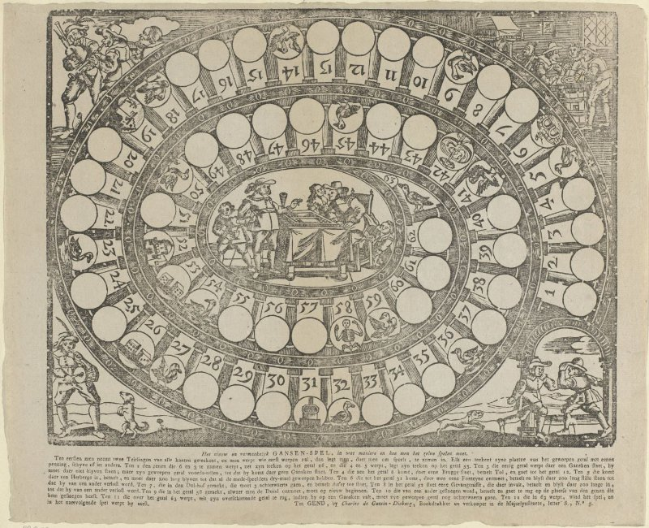

T-Z-T_star : 12 images du dev, |Δ H-F1| décroissant (égalités : identifiant)
https://id.rijksmuseum.nl/200766910 · print · Δ = -0.602

Vérité (projetée)
61B2 — historical persons
44B113 — king
45C221 — helmet
44B112 — emperor
T_star (H-F1 0.720)
44B1 — ruler, sovereign
45 — warfare; military affairs
61B2 — historical persons
T-Z (H-F1 0.118)
4 — Society, Civilization, Culture
https://id.rijksmuseum.nl/200693875 · print · Δ = -0.600

Vérité (projetée)
25H214 — lake
T_star (H-F1 0.600)
25H1 — landscapes in the temperate zone
T-Z (H-F1 0.000)
4 — Society, Civilization, Culture
https://id.rijksmuseum.nl/200315290 · drawing · Δ = -0.571

Vérité (projetée)
49G21 — sick-bed
41A23 — bedroom
T_star (H-F1 0.571)
41A2 — interior of the house
42 — family, descendance
T-Z (H-F1 0.000)
7 — Bible
https://id.rijksmuseum.nl/200145752 · drawing · Δ = -0.545

Vérité (projetée)
25F33(EAGLE) — predatory birds: eagle
25F32(RAVEN) — song-birds: raven
47I213 — sheep
T_star (H-F1 0.545)
47I213 — sheep
47I221 — herding, herdsman, herdswoman, shepherd, shepherdess, cowherd, etc.
T-Z (H-F1 0.000)
7 — Bible
https://id.rijksmuseum.nl/200362330 · drawing · Δ = +0.524

Vérité (projetée)
46A124 — knight
T_star (H-F1 0.182)
45C22 — armour
46C13141 — horse
61B2 — historical persons
T-Z (H-F1 0.706)
45 — warfare; military affairs
46A124 — knight
46C131 — riding a horse, ass, or mule; rider, horseman
https://id.rijksmuseum.nl/200139779 · drawing · Δ = +0.520

Vérité (projetée)
43C24 — winter sports
26D4 — ice ~ freezing weather
T_star (H-F1 0.480)
25I — city-view, and landscape with man-made constructions
43C24 — winter sports
46 — social and economic life, transport and communication
47D31 — windmill
61E — names of cities and villages
T-Z (H-F1 1.000)
26D4 — ice ~ freezing weather
43C24 — winter sports
https://id.rijksmuseum.nl/200114952 · drawing · Δ = -0.500

Vérité (projetée)
71C — Genesis: the patriarchs
71E — Exodus, Leviticus, Numbers, Deuteronomy, Joshua: from the bondage of the Israelites in Egypt to their settlement in Canaan
T_star (H-F1 0.500)
11 — Christian religion
71 — Old Testament
T-Z (H-F1 0.000)
11 — Christian religion
https://id.rijksmuseum.nl/20028553 · painting · Δ = -0.475

Vérité (projetée)
25H17 — meadow, pasture
46C232 — rowing-boat, canoe, etc.
T_star (H-F1 0.783)
25H213 — river
46C232 — rowing-boat, canoe, etc.
T-Z (H-F1 0.308)
46 — social and economic life, transport and communication
https://id.rijksmuseum.nl/200732231 · drawing · Δ = +0.467

Vérité (projetée)
44A3 — flag, colours (as symbol of the state, etc.)
T_star (H-F1 0.533)
25FF — fabulous animals (sometimes wrongly called 'grotesques'); 'Mostri' (Ripa)
44A31 — banner, standard (as symbol of the state, etc.)
45D1 — (military) flags and standards
T-Z (H-F1 1.000)
44A3 — flag, colours (as symbol of the state, etc.)
https://id.rijksmuseum.nl/200725785 · print · Δ = -0.444

Vérité (projetée)
47I2112 — cow
47I221 — herding, herdsman, herdswoman, shepherd, shepherdess, cowherd, etc.
46C11 — road, path
T_star (H-F1 0.444)
2 — Nature
46C1 — traffic on land
T-Z (H-F1 0.000)
(vide) — (no own text)
https://id.rijksmuseum.nl/200520863 · painting · Δ = +0.438

Vérité (projetée)
45C13 — hacking and thrusting weapons
61B111 — anonymous historical person portrayed alone
44B152 — royal household; courtiers, retinue, train
44B116 — regent, substitute ruler; viceroy
T_star (H-F1 0.229)
31A231 — standing figure
31A24 — postures of the head
32B3 — peoples and nationalities (other than prehistoric or 'historical')
41D2 — clothes, costume
61B — historical persons (portraits and scenes from the life)
T-Z (H-F1 0.667)
31 — man in a general biological sense
45C1 — weapons
61B111 — anonymous historical person portrayed alone
https://id.rijksmuseum.nl/200559998 · print · Δ = +0.438

Vérité (projetée)
43C531 — goose-game
43C52 — board-games
43C53 — board-games of chance
T_star (H-F1 0.133)
1 — Religion and Magic
23U1 — calendar, almanac
44 — state; law; political life
46 — social and economic life, transport and communication
T-Z (H-F1 0.571)
2 — Nature
42 — family, descendance
43C5 — games of calculation and chance, e.g.: card games, gambling, puzzles, etc.
46 — social and economic life, transport and communication